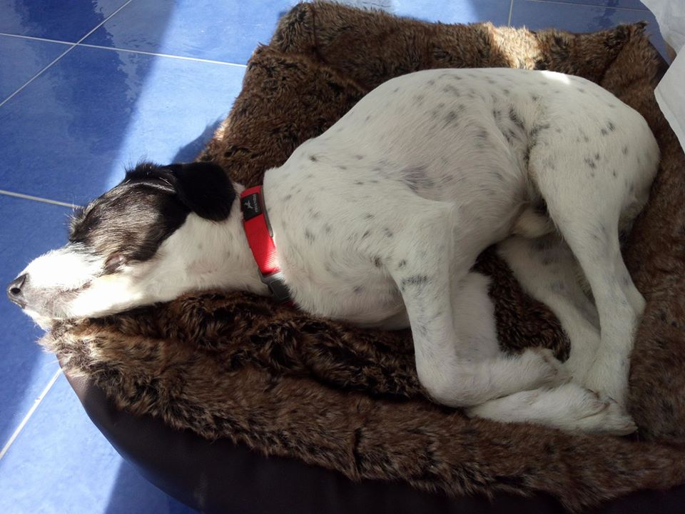
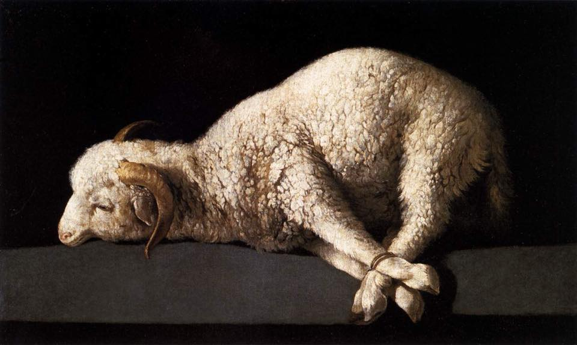
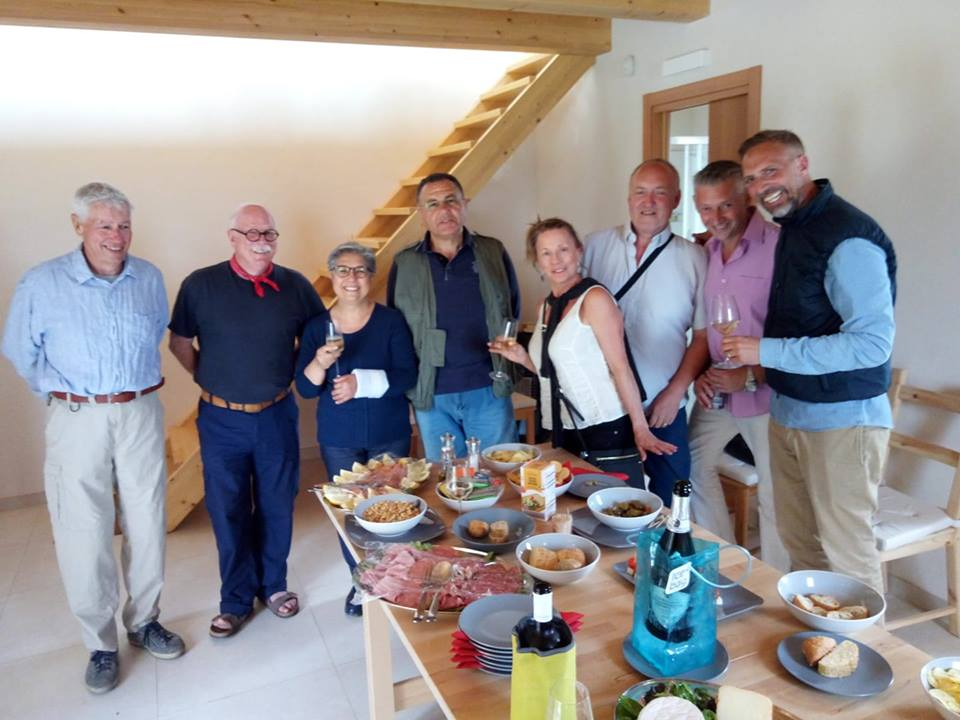
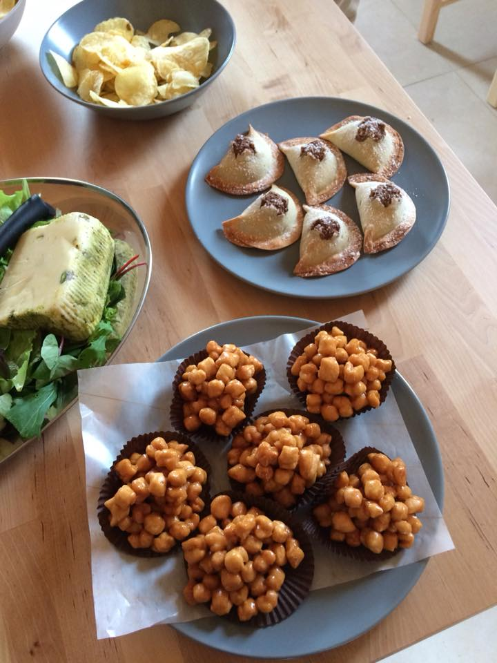

Day 23 - 17 May 2018 (Marzamemi)
Daddies, you tired me out yesterday so I am just going to have a lie-in this morning! Sammy models himself on the Agnus Dei painting by Zurbarán.
Thank you to Diane and Stephen for a fabulous party. Below is a photo of the early arrivals. Despite the linguistic challenges the 30 people had a fun time.
And some fabulous sweet meats brought by a local. The things that look like mini Cornish pasties were originally made by nuns for the priest when he wasn’t allowed to eat meat ...



